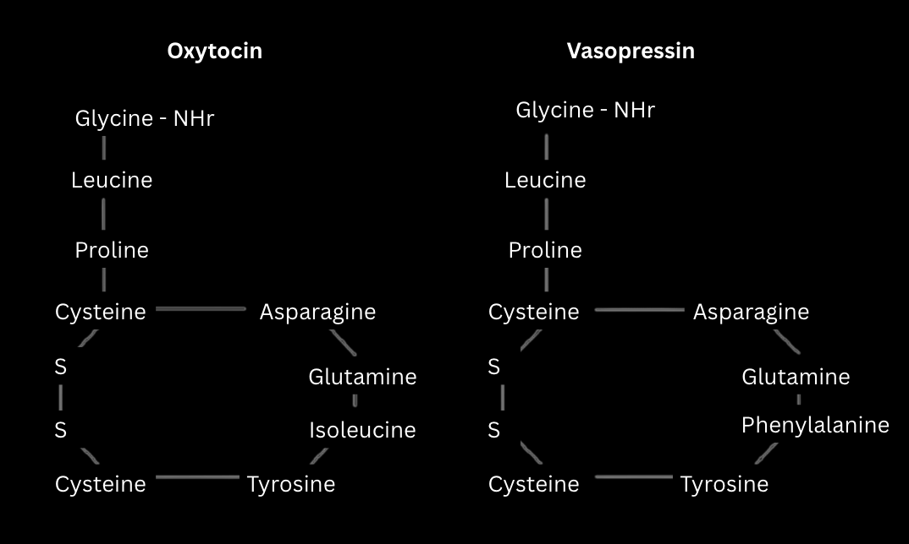
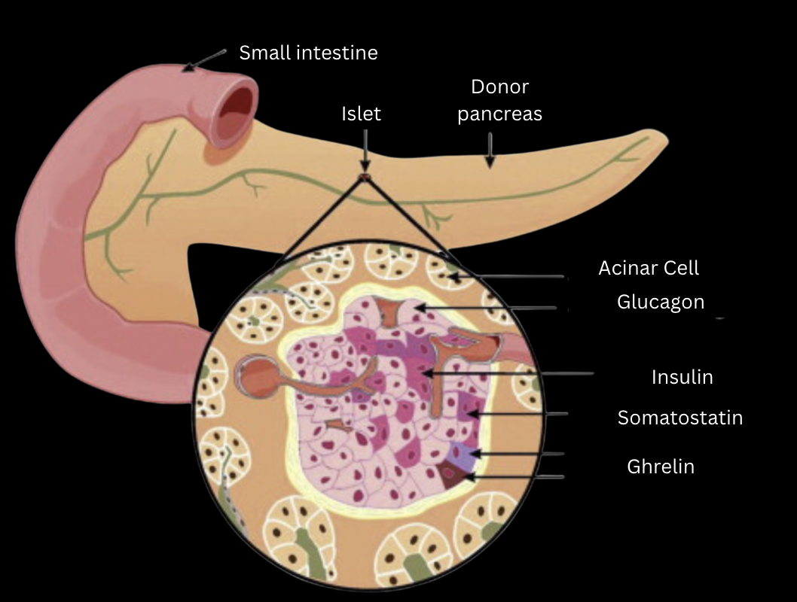

Adenohypophysis
- Growth hormone (GH) or somatotropic hormone (STH)
- This hormone promotes the growth of the body. It stimulates the growth of muscles, bones, and other tissues all over the body.
- It directly results in faster protein synthesis, by increasing the rate of amino acid uptake by the cell from their extracellular environment. This leads to growth.
- It indirectly results in the elongation of the body's bones, by the stimulation of cellular proliferation in the epiphyseal cartilage of the bones.
- Too much secretion of growth hormone may cause an excessive increase in the height of the body, a phenomenon characterized as gigantism.
- The secretion of the hormone in smaller amounts during the growth period causes a restriction in height, a phenomenon characterized as dwarfism.
- In individuals who have completed the growth of their skeleton and the epiphyseal cartilages of the bones have fully ossified, the hypersecretion of growth hormone cannot cause an increase in height, but acromegaly. An individual with acromegaly presents with abnormal deformation of the hands, feet, and facial bones.
- Thyroid-stimulating hormone (TSH)
- It stimulates the thyroid gland to grow and to secrete other hormones.
- Adrenocorticotropic hormone (ACTH)
- Stimulates the development of the adrenal cortex and regulates its secretory function.
- Follicle-stimulating hormone (FSH)
In women: regulates the development of ovarian follicles and stimulates the secretion of estradiol from them.
- In men: stimulates the development of the seminiferous tubules and spermatogenesis.
- Luteinizing hormone (LH)
- In women: causes the rupture of the ovarian follicle and its transformation into the corpus luteum. It also stimulates the secretory function of the corpus luteum.
- In men: it stimulates the secretory function of the interstitial cells of the testes to produce testosterone.
- Melanocyte-stimulating hormone (MSH)
- This hormone stimulates the production of melanin from tyrosine.
- High levels can cause hyperpigmentation.
- Prolactin (PRL)
- Prolactin acts on organs that are not endocrine glands. Its main action is aimed at stimulating the glandular cells of the breast for milk production.
- High levels of PRL in men can cause gynecomastia or galactorrhea.
Neuropophysis
- Oxytocin (OT)
- Causes the release of milk from the breasts and stimulates uterine contractions to aid in childbirth.
- Stimulates the reabsorption of water from the glomerular filtrate in the kidneys when the osmotic pressure of the body's fluids exceeds the normal limits. This way it regulates the amount of water present in the body's fluids and by extension the osmotic pressure. When the concentration of antidiuretic hormone in the blood is low, increased urine production is observed. The same is observed after the consumption of alcohol because alcohol inhibits the secretion of the hormone.
- In cases of under-functioning of the neurosecretory cells, antidiuretic hormone in the blood is reduced, resulting in diabetes insipidus, with symptoms of polyuria, due to the reduced reabsorption of water from the glomerular filtrate in the kidneys, and polydipsia, due to the body's reaction to replenish the water that is lost.
- These hormones are called gonadotropins because they target the gonads.
- OT and ADH are channeled into the bloodstream when the appropriate stimulus reaches the hypothalamus. For the antidiuretic hormone it can be the high osmotic pressure of the blood and for oxytocin, it can be the suckling of the breast by the infant.
- OT and ADH also share a very similar structure as they are both cyclic nonapeptides (consisting of nine amino acids).
-

PERIPHERAL GLANDS
The Thyroid Gland
This gland consists of two lobes and is located below the larynx.
The thyroid produces and secretes T4 (4 iodine atoms) and in smaller quantities T3 (3 iodine atoms), as well as calcitonin. T4 is not recognised by the target cells so it is all converted into T3 after entering the target cell. It then stimulates aerobic respiration (increased catabolism) and increases the metabolic rate. It helps with thermoregulation, maintaining blood pressure, heart rate, muscle tone, digestion and reproduction.
During the growth stage, thyroxine promotes growth and causes the central nervous system to mature.
- Hypothyroidism in early age: lack of physical and mentally development, resulting in cretinism: dwarfism and mental retardation. If diagnosed early during infancy it is preventable with medication.
- Hypothyroidism in adults: reduced catabolism. Symptoms include: weight gain, hypothermia, physical and mental lethargy, myxedema (swollen skin from the accumulation of a mucous fluid). It may also cause goiter in individuals whose diet is poor in iodine, resulting in reduced production of thyroxine. The thyroid in its effort to produce more thyroxine swells and protrudes outwards.
- Hyperthyroidism in adults: exophthalmic goiter. Symptoms include exophthalmos (the eyeballs protrude outwards, goiter (swelling of the gland), weight loss, hyperthermia, easy sweating, tachycardia, nervousness, and high blood pressure.
Calcitonin is responsible for maintaining the concentration of calcium in the blood within physiological levels. When the concentration of calcium in the blood exceeds physiological levels (10 mg/100 ml), calcitonin reduces its reabsorption from the filtrate in the kidneys and causes the deposition of the excess amount of calcium in the bones.
The Parathyroid Glands
Four small glands embedded in the back side of the thyroid gland and produce parathyroid hormone, which also regulates the calcium ions (Ca²⁺).
Its action goes against calcitonin (they are antagonistic). It promotes the removal of calcium from the bones into the blood, activates the pathway that converts provitamin D to vitamin D to increase absorption from the small intestine and stimulates the reabsorption of calcium ions from the filtrate to the blood.
- Hyperparathyroidism: removal of calcium from the bones, making them weak and soft. When the concentration of calcium ions in the blood exceeds certain limits, it is deposited in various organs, such as muscles, kidneys and the pancreas, hindering their normal function.
- Hypoparathyroidism: decrease in the concentration of calcium ions in the blood, causing tetany of the muscles (uncontrolled contractions and spasms of the muscles).
The Pancreas
The endocrine part of the pancreas consists of certain secretory cells, which are in groups called the islets of Langerhans. These islets are scattered throughout the gland and consist of five types of secretory cells:
- a-cells: secrete glucagon, raises blood sugar.
- β-cells: secrete insulin, lowers blood sugar.
- δ-cells: secrete somatostatin, regulates the release of other hormones.
- ε-cells: secrete ghrelin, stimulates appetite.
- >PP cells: secrete pancreatic polypeptide (PP), regulates pancreatic function and digestion.

Glucagon and insulin are channeled into the blood and exert regulatory control on carbohydrate metabolism. They are antagonistic hormones.
Insulin enters the bloodstream when the concentration of glucose in the blood exceeds the physiological levels (90 mg/100 ml). This happens when someone ingests carbohydrates. Increased glucose in the blood stimulates the secretion of insulin from the β-cells of the pancreas and causes inhibition of the secretion of glucagon.
Written by Alexandros Samoutis